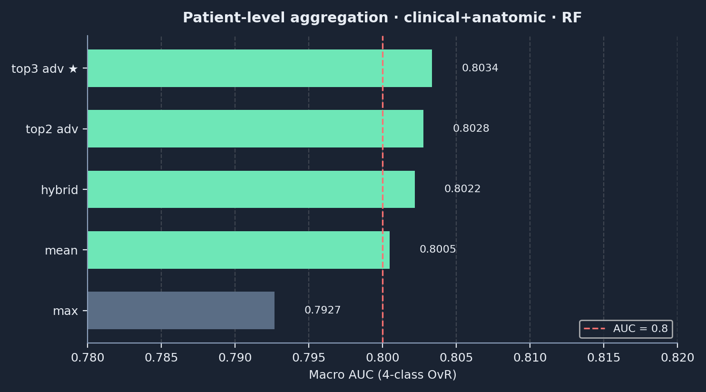
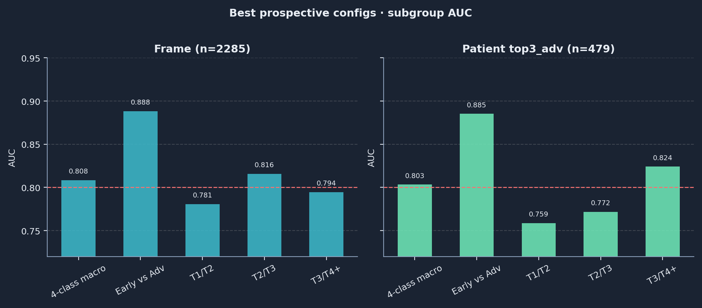
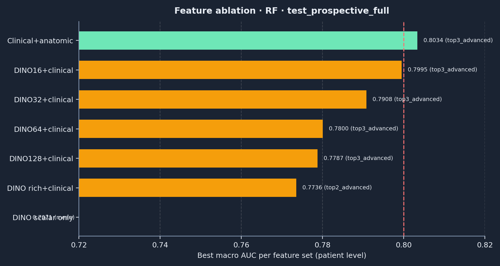
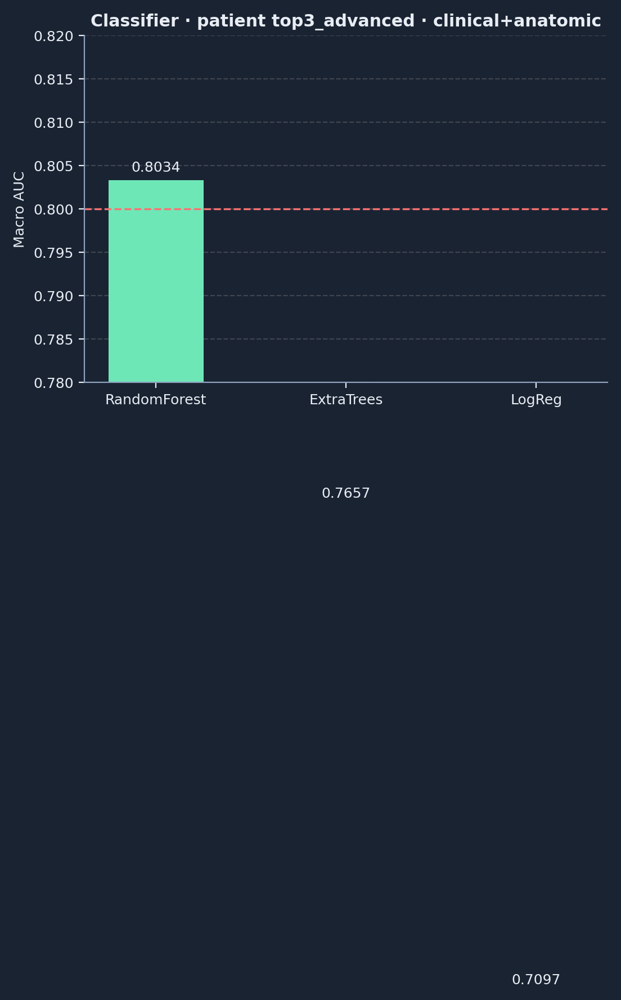
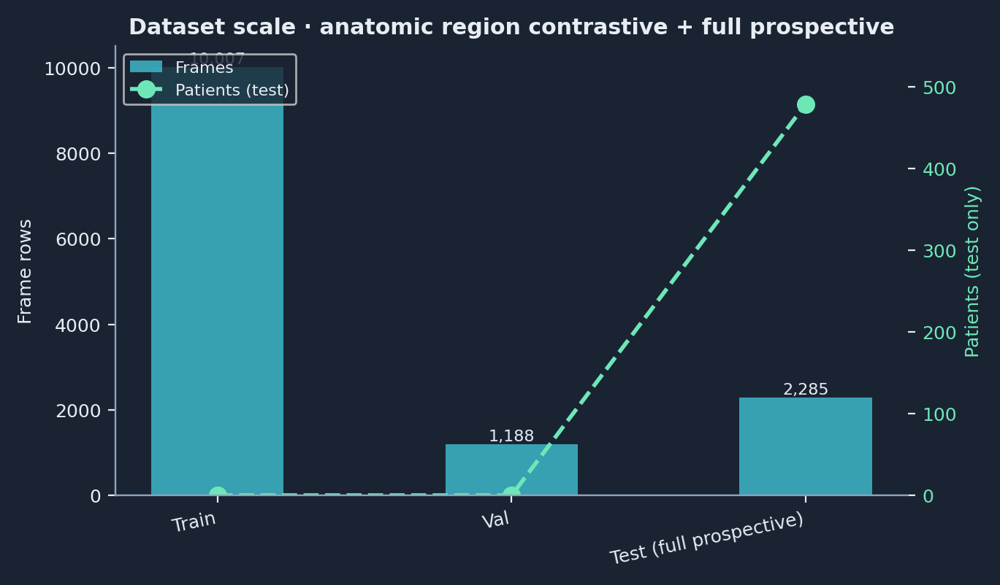
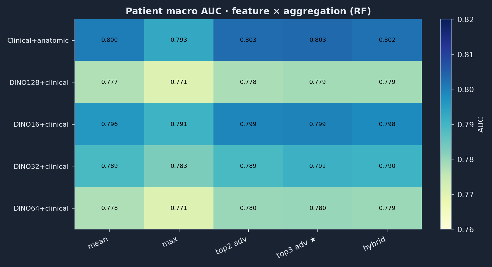

Frame+agg · Prospective
DINOv3 帧级标量 + 临床/解剖表格 · 帧级训练 + 病人级晚期聚合 ·
test_prospective_full（479 例 / 2285 帧）
结果摘要
帧级 · 四分类 macro AUC
0.8084
病人级 · 四分类 macro AUC
0.8034
Early vs Advanced
0.885
帧级 AUC（0.808）高于病人级（0.803）因评估单位不同；部署汇报以病人级 top3_advanced为准。
完整 Markdown：dinov3_framelevel_scalar_prospective_architecture_zh.md
端到端架构
flowchart TB
subgraph upstream["上游离线"]
IMG[crop_ui 帧]
MASK[anatomic masks]
DINO[DINOv3 ViT-B/16 L2,5,8,11]
TAB[临床+解剖 43维]
DINO --> SCALAR[rich scalar 112维]
IMG --> DINO
MASK --> DINO
TAB --> MERGE[帧级表格]
SCALAR --> MERGE
end
subgraph train["帧级训练"]
MERGE --> RF[RandomForest / ET / LogReg]
TR[train 10007帧] --> RF
end
subgraph infer["推理聚合"]
RF --> P[帧级概率 4类]
P --> AGG[top3_advanced等]
AGG --> PAT[479病人 AUC 0.803]
P --> FRM[2285帧 AUC 0.808]
end
指标明细
帧级最佳
| 指标 | AUC |
|---|---|
| 4-class macro | 0.8084 |
| Early vs Adv | 0.8884 |
| T1/T2 | 0.7806 |
| T2/T3 | 0.8157 |
| T3/T4+ | 0.7945 |
病人级 top3_advanced
| 指标 | AUC |
|---|---|
| 4-class macro | 0.8034 |
| Early vs Adv | 0.8852 |
| T1/T2 | 0.7587 |
| T2/T3 | 0.7716 |
| T3/T4+ | 0.8241 |
统计可视化
病人级聚合对比

帧级 vs 病人级子任务 AUC

特征集消融

分类器对比

数据规模

特征×聚合热力图

复现
python scripts/run_dinov3_framelevel_scalar_train_eval.py python scripts/generate_framelevel_prospective_stats_html.py
数据源：pipeline/experiments/reports/dinov3_framelevel_scalar_train_eval/framelevel_dinov3_scalar_results.csv